By cuisine按菜系
From Dongbei to Sichuan to Greek.东北、川、粤、日韩、地中海，各地口味。
Chinese home-style家常 49
 Braised Beef Noodle Soup红烧牛肉面140 min分钟 · 4 servings份 · Chinese home-style家常
Braised Beef Noodle Soup红烧牛肉面140 min分钟 · 4 servings份 · Chinese home-style家常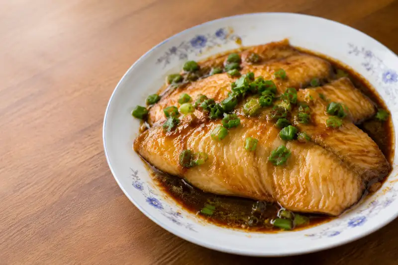
Soy-Braised Fish (Hong Shao Yu)红烧鱼块30 min分钟 · 3 servings份 · Chinese home-style家常Braised Tofu with Mushrooms香菇烧豆腐25 min分钟 · 2 servings份 · Chinese home-style家常 Chicken and Broccoli Stir-fry鸡胸肉炒西兰花27 min分钟 · 2 servings份 · Chinese home-style家常
Chicken and Broccoli Stir-fry鸡胸肉炒西兰花27 min分钟 · 2 servings份 · Chinese home-style家常 Cola Chicken Wings可乐鸡翅40 min分钟 · 4 servings份 · Chinese home-style家常Sesame Cold Noodles麻酱凉面17 min分钟 · 2 servings份 · Chinese home-style家常
Cola Chicken Wings可乐鸡翅40 min分钟 · 4 servings份 · Chinese home-style家常Sesame Cold Noodles麻酱凉面17 min分钟 · 2 servings份 · Chinese home-style家常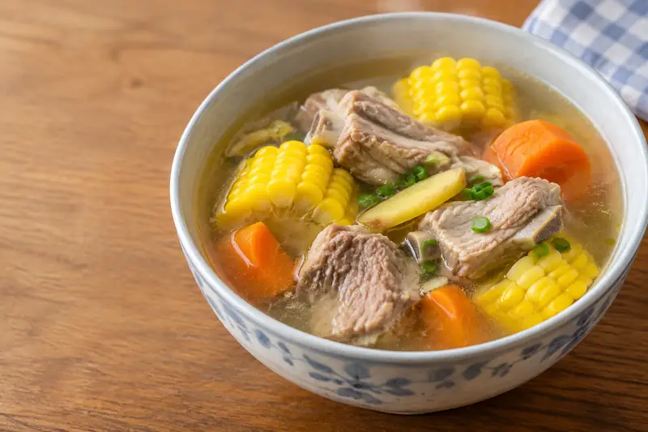
Corn and Pork Rib Soup玉米排骨汤110 min分钟 · 4 servings份 · Cantonese粤 Cumin Lamb Stir-fry孜然羊肉23 min分钟 · 2 servings份 · Chinese home-style家常Tomato Egg Drop Soup番茄蛋花汤17 min分钟 · 2 servings份 · Chinese home-style家常Egg Fried Noodles鸡蛋炒面16 min分钟 · 2 servings份 · Chinese home-style家常Lunchbox Egg Fried Rice便当蛋炒饭95 min分钟 · 2 servings份 · Chinese home-style家常
Cumin Lamb Stir-fry孜然羊肉23 min分钟 · 2 servings份 · Chinese home-style家常Tomato Egg Drop Soup番茄蛋花汤17 min分钟 · 2 servings份 · Chinese home-style家常Egg Fried Noodles鸡蛋炒面16 min分钟 · 2 servings份 · Chinese home-style家常Lunchbox Egg Fried Rice便当蛋炒饭95 min分钟 · 2 servings份 · Chinese home-style家常 Tomato Fish Soup番茄鱼片汤30 min分钟 · 4 servings份 · Chinese home-style家常
Tomato Fish Soup番茄鱼片汤30 min分钟 · 4 servings份 · Chinese home-style家常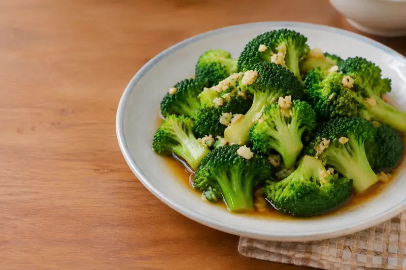
Garlic Broccoli Stir-fry蒜蓉西兰花14 min分钟 · 2 servings份 · Chinese home-style家常Steamed Garlic Eggplant蒜泥蒸茄子22 min分钟 · 2 servings份 · Chinese home-style家常 Honey Garlic Wings蜜汁蒜香鸡翅45 min分钟 · 2 servings份 · Chinese home-style家常
Honey Garlic Wings蜜汁蒜香鸡翅45 min分钟 · 2 servings份 · Chinese home-style家常 Red-Braised Pork Belly红烧肉110 min分钟 · 4 servings份 · Chinese home-style家常
Red-Braised Pork Belly红烧肉110 min分钟 · 4 servings份 · Chinese home-style家常 Hot and Sour Soup酸辣汤27 min分钟 · 4 servings份 · Sichuan川Hunan Chili and Egg Stir-fry尖椒炒蛋14 min分钟 · 2 servings份 · Hunan湘
Hot and Sour Soup酸辣汤27 min分钟 · 4 servings份 · Sichuan川Hunan Chili and Egg Stir-fry尖椒炒蛋14 min分钟 · 2 servings份 · Hunan湘 Home-style Tofu with Pork and Peppers家常豆腐28 min分钟 · 2 servings份 · Sichuan川Jianbing Breakfast Crepe煎饼果子30 min分钟 · 2 servings份 · Chinese home-style家常
Home-style Tofu with Pork and Peppers家常豆腐28 min分钟 · 2 servings份 · Sichuan川Jianbing Breakfast Crepe煎饼果子30 min分钟 · 2 servings份 · Chinese home-style家常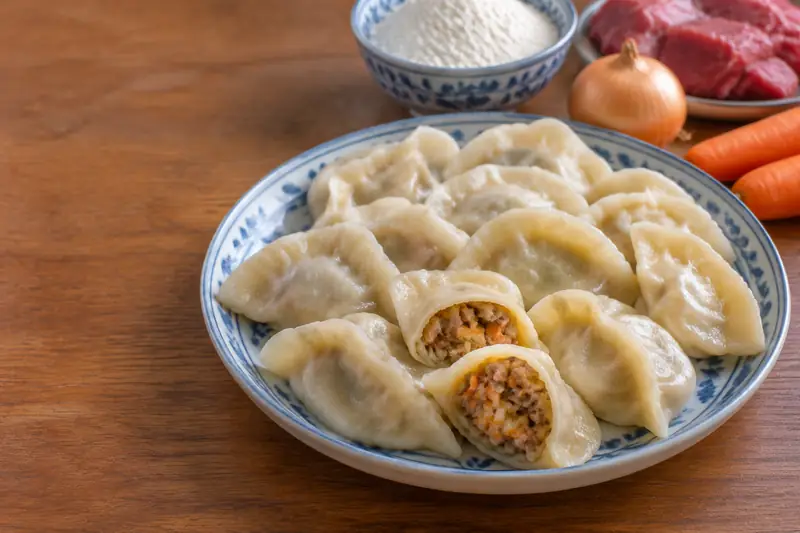
Lamb and Carrot Dumplings羊肉胡萝卜水饺85 min分钟 · 5 servings份 · Northeastern Chinese东北Clear Lamb Hot Pot清汤羊肉锅125 min分钟 · 4 servings份 · Chinese home-style家常 Lamb and Daikon Soup白萝卜羊肉汤110 min分钟 · 4 servings份 · Chinese home-style家常Braised Lamb Shanks红焖羊腿140 min分钟 · 4 servings份 · Chinese home-style家常Oven Lamb Skewers烤箱羊肉串67 min分钟 · 3 servings份 · Chinese home-style家常
Lamb and Daikon Soup白萝卜羊肉汤110 min分钟 · 4 servings份 · Chinese home-style家常Braised Lamb Shanks红焖羊腿140 min分钟 · 4 servings份 · Chinese home-style家常Oven Lamb Skewers烤箱羊肉串67 min分钟 · 3 servings份 · Chinese home-style家常 Bok Choy with Shiitake Mushrooms香菇扒油菜21 min分钟 · 3 servings份 · Jiangnan江浙Pan-Seared Salmon with Soy Butter酱油黄油煎三文鱼15 min分钟 · 2 servings份 · Chinese home-style家常Black Pepper Beef Rice Bowl黑椒牛肉饭30 min分钟 · 2 servings份 · Chinese home-style家常
Bok Choy with Shiitake Mushrooms香菇扒油菜21 min分钟 · 3 servings份 · Jiangnan江浙Pan-Seared Salmon with Soy Butter酱油黄油煎三文鱼15 min分钟 · 2 servings份 · Chinese home-style家常Black Pepper Beef Rice Bowl黑椒牛肉饭30 min分钟 · 2 servings份 · Chinese home-style家常 Pork and Napa Cabbage Dumplings猪肉白菜水饺85 min分钟 · 5 servings份 · Northeastern Chinese东北
Pork and Napa Cabbage Dumplings猪肉白菜水饺85 min分钟 · 5 servings份 · Northeastern Chinese东北 Beef and Potato Stew土豆炖牛肉120 min分钟 · 4 servings份 · Northeastern Chinese东北
Beef and Potato Stew土豆炖牛肉120 min分钟 · 4 servings份 · Northeastern Chinese东北 Braised Chicken with Potatoes土豆烧鸡45 min分钟 · 3 servings份 · Chinese home-style家常Salmon Fried Rice三文鱼炒饭22 min分钟 · 2 servings份 · Chinese home-style家常
Braised Chicken with Potatoes土豆烧鸡45 min分钟 · 3 servings份 · Chinese home-style家常Salmon Fried Rice三文鱼炒饭22 min分钟 · 2 servings份 · Chinese home-style家常 Scallion Lamb Stir-fry葱爆羊肉36 min分钟 · 2 servings份 · Chinese home-style家常
Scallion Lamb Stir-fry葱爆羊肉36 min分钟 · 2 servings份 · Chinese home-style家常 Braised Tofu with Green Onions葱烧豆腐20 min分钟 · 2 servings份 · Shandong鲁
Braised Tofu with Green Onions葱烧豆腐20 min分钟 · 2 servings份 · Shandong鲁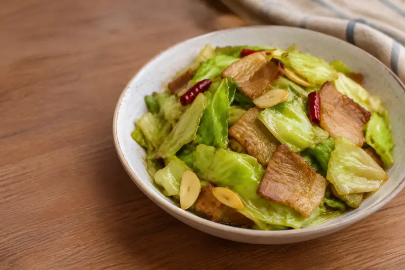
Hand-Torn Cabbage Stir-fry手撕包菜18 min分钟 · 2 servings份 · Hunan湘 Smashed Cucumber Salad拍黄瓜20 min分钟 · 2 servings份 · Chinese home-style家常
Smashed Cucumber Salad拍黄瓜20 min分钟 · 2 servings份 · Chinese home-style家常 Hot and Sour Shredded Potatoes酸辣土豆丝19 min分钟 · 3 servings份 · Northeastern Chinese东北
Hot and Sour Shredded Potatoes酸辣土豆丝19 min分钟 · 3 servings份 · Northeastern Chinese东北 Spinach and Tofu Soup菠菜豆腐汤17 min分钟 · 3 servings份 · Chinese home-style家常
Spinach and Tofu Soup菠菜豆腐汤17 min分钟 · 3 servings份 · Chinese home-style家常 Silky Steamed Eggs with Minced Pork肉末蒸水蛋25 min分钟 · 2 servings份 · Cantonese粤Stir-fried Greens清炒时蔬16 min分钟 · 2 servings份 · Chinese home-style家常Pork Mince Tofu Rice Bowl肉末豆腐盖饭37 min分钟 · 2 servings份 · Chinese home-style家常
Silky Steamed Eggs with Minced Pork肉末蒸水蛋25 min分钟 · 2 servings份 · Cantonese粤Stir-fried Greens清炒时蔬16 min分钟 · 2 servings份 · Chinese home-style家常Pork Mince Tofu Rice Bowl肉末豆腐盖饭37 min分钟 · 2 servings份 · Chinese home-style家常 Tomato Beef Brisket Soup西红柿牛腩汤140 min分钟 · 4 servings份 · Chinese home-style家常
Tomato Beef Brisket Soup西红柿牛腩汤140 min分钟 · 4 servings份 · Chinese home-style家常 Tomato and Egg Noodles西红柿鸡蛋打卤面30 min分钟 · 3 servings份 · Chinese home-style家常
Tomato and Egg Noodles西红柿鸡蛋打卤面30 min分钟 · 3 servings份 · Chinese home-style家常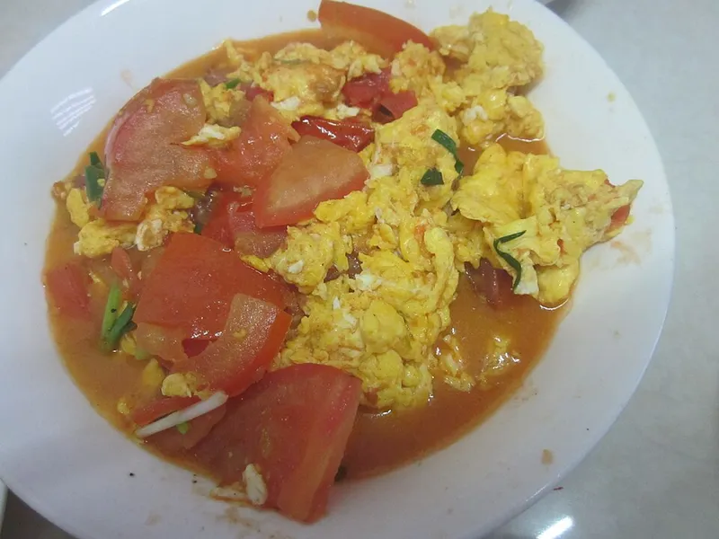
Tomato and Egg Stir-fry番茄炒蛋18 min分钟 · 2 servings份 · Chinese home-style家常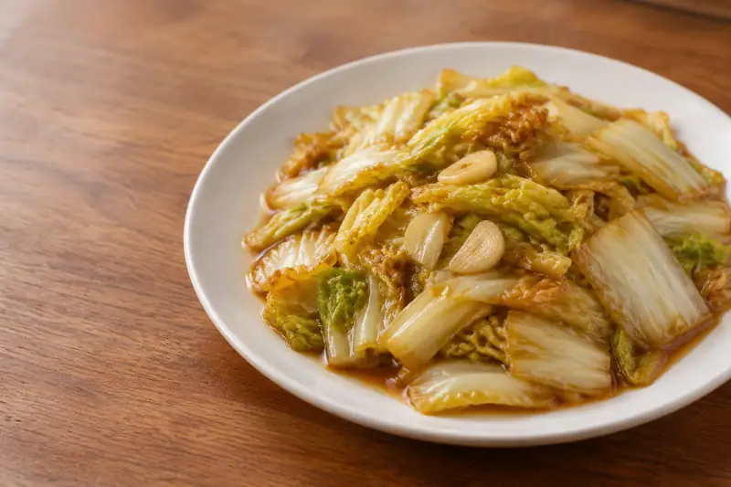
Vinegar Stir-fried Napa Cabbage醋溜白菜13 min分钟 · 3 servings份 · Shandong鲁 Winter Melon and Shrimp Soup冬瓜虾仁汤40 min分钟 · 4 servings份 · Chinese home-style家常Tomato Beef Brisket Noodles番茄牛腩面115 min分钟 · 4 servings份 · Chinese home-style家常Beijing Zhajiang Noodles老北京炸酱面40 min分钟 · 3 servings份 · Chinese home-style家常Zucchini and Egg Stir-fry西葫芦炒蛋15 min分钟 · 2 servings份 · Chinese home-style家常
Winter Melon and Shrimp Soup冬瓜虾仁汤40 min分钟 · 4 servings份 · Chinese home-style家常Tomato Beef Brisket Noodles番茄牛腩面115 min分钟 · 4 servings份 · Chinese home-style家常Beijing Zhajiang Noodles老北京炸酱面40 min分钟 · 3 servings份 · Chinese home-style家常Zucchini and Egg Stir-fry西葫芦炒蛋15 min分钟 · 2 servings份 · Chinese home-style家常Northeastern Chinese东北 16
 Harbin-style Borscht with Beef and Cabbage罗宋汤（哈尔滨红汤）120 min分钟 · 6 servings份 · Northeastern Chinese东北Cumin Lamb Stir-fry孜然羊肉23 min分钟 · 2 servings份 · Chinese home-style家常
Harbin-style Borscht with Beef and Cabbage罗宋汤（哈尔滨红汤）120 min分钟 · 6 servings份 · Northeastern Chinese东北Cumin Lamb Stir-fry孜然羊肉23 min分钟 · 2 servings份 · Chinese home-style家常 Di San Xian (Potato, Eggplant and Pepper)地三鲜35 min分钟 · 3 servings份 · Northeastern Chinese东北Northeastern Mixed Vegetable Stew东北乱炖95 min分钟 · 4 servings份 · Northeastern Chinese东北
Di San Xian (Potato, Eggplant and Pepper)地三鲜35 min分钟 · 3 servings份 · Northeastern Chinese东北Northeastern Mixed Vegetable Stew东北乱炖95 min分钟 · 4 servings份 · Northeastern Chinese东北 Guobaorou Sweet and Sour Crispy Pork锅包肉55 min分钟 · 3 servings份 · Northeastern Chinese东北Lamb and Carrot Dumplings羊肉胡萝卜水饺85 min分钟 · 5 servings份 · Northeastern Chinese东北Lamb and Daikon Soup白萝卜羊肉汤110 min分钟 · 4 servings份 · Chinese home-style家常Pork and Napa Cabbage Dumplings猪肉白菜水饺85 min分钟 · 5 servings份 · Northeastern Chinese东北Beef and Potato Stew土豆炖牛肉120 min分钟 · 4 servings份 · Northeastern Chinese东北Scallion Lamb Stir-fry葱爆羊肉36 min分钟 · 2 servings份 · Chinese home-style家常Smashed Cucumber Salad拍黄瓜20 min分钟 · 2 servings份 · Chinese home-style家常Hot and Sour Shredded Potatoes酸辣土豆丝19 min分钟 · 3 servings份 · Northeastern Chinese东北
Guobaorou Sweet and Sour Crispy Pork锅包肉55 min分钟 · 3 servings份 · Northeastern Chinese东北Lamb and Carrot Dumplings羊肉胡萝卜水饺85 min分钟 · 5 servings份 · Northeastern Chinese东北Lamb and Daikon Soup白萝卜羊肉汤110 min分钟 · 4 servings份 · Chinese home-style家常Pork and Napa Cabbage Dumplings猪肉白菜水饺85 min分钟 · 5 servings份 · Northeastern Chinese东北Beef and Potato Stew土豆炖牛肉120 min分钟 · 4 servings份 · Northeastern Chinese东北Scallion Lamb Stir-fry葱爆羊肉36 min分钟 · 2 servings份 · Chinese home-style家常Smashed Cucumber Salad拍黄瓜20 min分钟 · 2 servings份 · Chinese home-style家常Hot and Sour Shredded Potatoes酸辣土豆丝19 min分钟 · 3 servings份 · Northeastern Chinese东北 Pickled Cabbage and Pork Belly Stew酸菜白肉95 min分钟 · 4 servings份 · Northeastern Chinese东北
Pickled Cabbage and Pork Belly Stew酸菜白肉95 min分钟 · 4 servings份 · Northeastern Chinese东北 Sweet and Sour Pork Tenderloin (Tangcu Liji)糖醋里脊40 min分钟 · 3 servings份 · Shandong鲁
Sweet and Sour Pork Tenderloin (Tangcu Liji)糖醋里脊40 min分钟 · 3 servings份 · Shandong鲁 Chicken and Mushroom Stew小鸡炖蘑菇100 min分钟 · 4 servings份 · Northeastern Chinese东北Zucchini and Egg Stir-fry西葫芦炒蛋15 min分钟 · 2 servings份 · Chinese home-style家常
Chicken and Mushroom Stew小鸡炖蘑菇100 min分钟 · 4 servings份 · Northeastern Chinese东北Zucchini and Egg Stir-fry西葫芦炒蛋15 min分钟 · 2 servings份 · Chinese home-style家常Sichuan川 19
Sichuan Chili Beef Salad夫妻肺片（牛肉版）275 min分钟 · 4 servings份 · Sichuan川Chongqing Spicy Noodles重庆小面18 min分钟 · 2 servings份 · Sichuan川Dan Dan Noodles担担面27 min分钟 · 2 servings份 · Sichuan川Hot and Sour Soup酸辣汤27 min分钟 · 4 servings份 · Sichuan川Twice-Cooked Pork回锅肉50 min分钟 · 2 servings份 · Sichuan川Home-style Tofu with Pork and Peppers家常豆腐28 min分钟 · 2 servings份 · Sichuan川Mouthwatering Chicken口水鸡47 min分钟 · 4 servings份 · Sichuan川 Kung Pao Chicken宫保鸡丁45 min分钟 · 2 servings份 · Sichuan川Spicy Diced Chicken辣子鸡丁45 min分钟 · 2 servings份 · Sichuan川
Kung Pao Chicken宫保鸡丁45 min分钟 · 2 servings份 · Sichuan川Spicy Diced Chicken辣子鸡丁45 min分钟 · 2 servings份 · Sichuan川 Chongqing Chilli Chicken重庆辣子鸡40 min分钟 · 3 servings份 · Sichuan川Minced Pork Eggplant肉末茄子26 min分钟 · 2 servings份 · Sichuan川
Chongqing Chilli Chicken重庆辣子鸡40 min分钟 · 3 servings份 · Sichuan川Minced Pork Eggplant肉末茄子26 min分钟 · 2 servings份 · Sichuan川 Mapo Tofu麻婆豆腐27 min分钟 · 2 servings份 · Sichuan川
Mapo Tofu麻婆豆腐27 min分钟 · 2 servings份 · Sichuan川 Sichuan Boiled Fish in Chilli Oil水煮鱼片35 min分钟 · 3 servings份 · Sichuan川Sichuan Boiled Beef水煮牛肉38 min分钟 · 3 servings份 · Sichuan川Pickled Cabbage Fish酸菜鱼38 min分钟 · 3 servings份 · Sichuan川Hot and Sour Glass Noodles酸辣粉38 min分钟 · 2 servings份 · Sichuan川Fish-fragrant Eggplant鱼香茄子27 min分钟 · 3 servings份 · Sichuan川Yuxiang Shredded Pork鱼香肉丝38 min分钟 · 2 servings份 · Sichuan川
Sichuan Boiled Fish in Chilli Oil水煮鱼片35 min分钟 · 3 servings份 · Sichuan川Sichuan Boiled Beef水煮牛肉38 min分钟 · 3 servings份 · Sichuan川Pickled Cabbage Fish酸菜鱼38 min分钟 · 3 servings份 · Sichuan川Hot and Sour Glass Noodles酸辣粉38 min分钟 · 2 servings份 · Sichuan川Fish-fragrant Eggplant鱼香茄子27 min分钟 · 3 servings份 · Sichuan川Yuxiang Shredded Pork鱼香肉丝38 min分钟 · 2 servings份 · Sichuan川
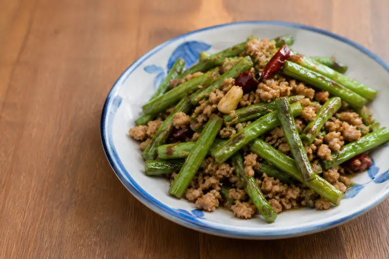
Sichuan Dry-Fried Green Beans干煸四季豆26 min分钟 · 2 servings份 · Sichuan川Hot and Sour Soup酸辣汤27 min分钟 · 4 servings份 · Sichuan川Twice-Cooked Pork回锅肉50 min分钟 · 2 servings份 · Sichuan川Home-style Tofu with Pork and Peppers家常豆腐28 min分钟 · 2 servings份 · Sichuan川Mouthwatering Chicken口水鸡47 min分钟 · 4 servings份 · Sichuan川Kung Pao Chicken宫保鸡丁45 min分钟 · 2 servings份 · Sichuan川Spicy Diced Chicken辣子鸡丁45 min分钟 · 2 servings份 · Sichuan川Chongqing Chilli Chicken重庆辣子鸡40 min分钟 · 3 servings份 · Sichuan川Minced Pork Eggplant肉末茄子26 min分钟 · 2 servings份 · Sichuan川Mapo Tofu麻婆豆腐27 min分钟 · 2 servings份 · Sichuan川Sichuan Boiled Fish in Chilli Oil水煮鱼片35 min分钟 · 3 servings份 · Sichuan川Sichuan Boiled Beef水煮牛肉38 min分钟 · 3 servings份 · Sichuan川Pickled Cabbage Fish酸菜鱼38 min分钟 · 3 servings份 · Sichuan川Hot and Sour Glass Noodles酸辣粉38 min分钟 · 2 servings份 · Sichuan川Fish-fragrant Eggplant鱼香茄子27 min分钟 · 3 servings份 · Sichuan川Yuxiang Shredded Pork鱼香肉丝38 min分钟 · 2 servings份 · Sichuan川Shandong鲁 8
Shandong Braised Prawns油焖大虾17 min分钟 · 2 servings份 · Shandong鲁 Shandong Pan-Braised Tofu锅塌豆腐27 min分钟 · 2 servings份 · Shandong鲁
Shandong Pan-Braised Tofu锅塌豆腐27 min分钟 · 2 servings份 · Shandong鲁 Three-Treasure Dumplings三鲜水饺80 min分钟 · 4 servings份 · Shandong鲁Braised Tofu with Green Onions葱烧豆腐20 min分钟 · 2 servings份 · Shandong鲁Sweet and Sour Pork Tenderloin (Tangcu Liji)糖醋里脊40 min分钟 · 3 servings份 · Shandong鲁Vinegar Stir-fried Napa Cabbage醋溜白菜13 min分钟 · 3 servings份 · Shandong鲁Shandong Braised Prawns油焖大虾22 min分钟 · 3 servings份 · Shandong鲁
Three-Treasure Dumplings三鲜水饺80 min分钟 · 4 servings份 · Shandong鲁Braised Tofu with Green Onions葱烧豆腐20 min分钟 · 2 servings份 · Shandong鲁Sweet and Sour Pork Tenderloin (Tangcu Liji)糖醋里脊40 min分钟 · 3 servings份 · Shandong鲁Vinegar Stir-fried Napa Cabbage醋溜白菜13 min分钟 · 3 servings份 · Shandong鲁Shandong Braised Prawns油焖大虾22 min分钟 · 3 servings份 · Shandong鲁
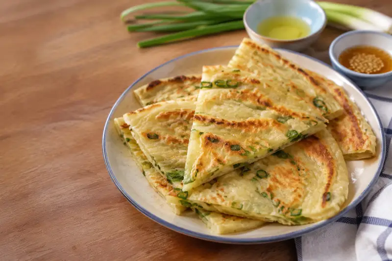
Scallion Pancakes葱油饼84 min分钟 · 4 servings份 · Shandong鲁Shandong Pan-Braised Tofu锅塌豆腐27 min分钟 · 2 servings份 · Shandong鲁Three-Treasure Dumplings三鲜水饺80 min分钟 · 4 servings份 · Shandong鲁Braised Tofu with Green Onions葱烧豆腐20 min分钟 · 2 servings份 · Shandong鲁Sweet and Sour Pork Tenderloin (Tangcu Liji)糖醋里脊40 min分钟 · 3 servings份 · Shandong鲁Vinegar Stir-fried Napa Cabbage醋溜白菜13 min分钟 · 3 servings份 · Shandong鲁Shandong Braised Prawns油焖大虾22 min分钟 · 3 servings份 · Shandong鲁Cantonese粤 33
 Cantonese Poached Chicken with Ginger-Scallion Oil白切鸡配姜葱蓉70 min分钟 · 4 servings份 · Cantonese粤Braised Beef Brisket with Daikon萝卜牛腩145 min分钟 · 4 servings份 · Cantonese粤
Cantonese Poached Chicken with Ginger-Scallion Oil白切鸡配姜葱蓉70 min分钟 · 4 servings份 · Cantonese粤Braised Beef Brisket with Daikon萝卜牛腩145 min分钟 · 4 servings份 · Cantonese粤 Beef Chow Fun干炒牛河23 min分钟 · 2 servings份 · Cantonese粤
Beef Chow Fun干炒牛河23 min分钟 · 2 servings份 · Cantonese粤 Black Pepper Beef Stir-fry黑椒牛柳43 min分钟 · 2 servings份 · Cantonese粤
Black Pepper Beef Stir-fry黑椒牛柳43 min分钟 · 2 servings份 · Cantonese粤 Cantonese Poached Shrimp with Ginger-Soy Dip白灼虾15 min分钟 · 2 servings份 · Cantonese粤Crispy Roast Pork Belly脆皮烧肉600 min分钟 · 4 servings份 · Cantonese粤
Cantonese Poached Shrimp with Ginger-Soy Dip白灼虾15 min分钟 · 2 servings份 · Cantonese粤Crispy Roast Pork Belly脆皮烧肉600 min分钟 · 4 servings份 · Cantonese粤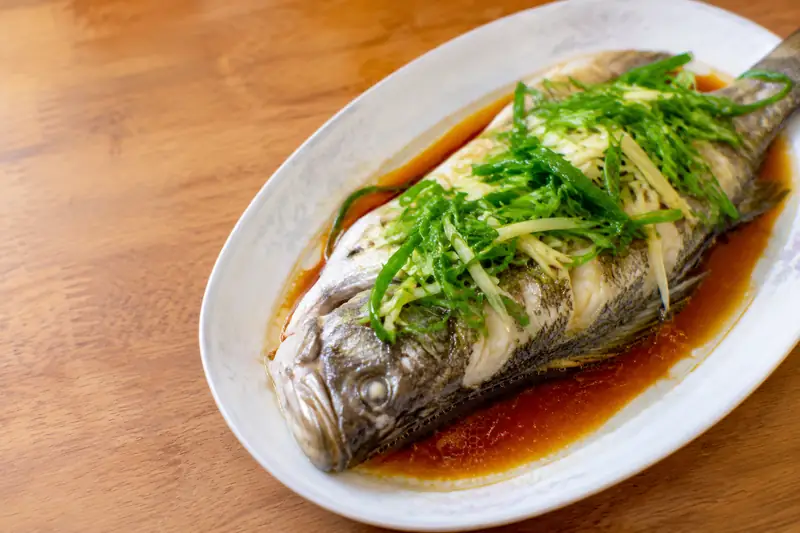
Cantonese Steamed Sea Bass清蒸鱼27 min分钟 · 3 servings份 · Cantonese粤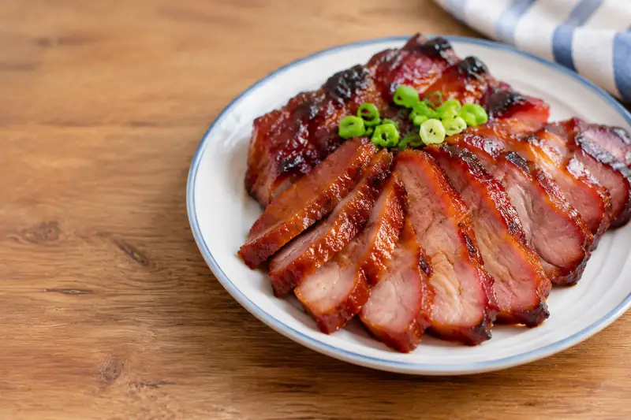
Cantonese Char Siu Pork蜜汁叉烧535 min分钟 · 4 servings份 · Cantonese粤Chicken Congee鸡肉粥63 min分钟 · 3 servings份 · Cantonese粤 Century Egg and Pork Congee皮蛋瘦肉粥80 min分钟 · 4 servings份 · Cantonese粤
Century Egg and Pork Congee皮蛋瘦肉粥80 min分钟 · 4 servings份 · Cantonese粤 Sweet Corn Egg Drop Soup粟米蛋花汤25 min分钟 · 4 servings份 · Cantonese粤Corn and Pork Rib Soup玉米排骨汤110 min分钟 · 4 servings份 · Cantonese粤
Sweet Corn Egg Drop Soup粟米蛋花汤25 min分钟 · 4 servings份 · Cantonese粤Corn and Pork Rib Soup玉米排骨汤110 min分钟 · 4 servings份 · Cantonese粤 Hong Kong Egg Tarts港式蛋挞77 min分钟 · 6 servings份 · Cantonese粤Soy Sauce Fried Noodles豉油皇炒面22 min分钟 · 2 servings份 · Cantonese粤Gai Lan in Oyster Sauce蚝油芥兰18 min分钟 · 3 servings份 · Cantonese粤Garlic Broccoli Stir-fry蒜蓉西兰花14 min分钟 · 2 servings份 · Chinese home-style家常
Hong Kong Egg Tarts港式蛋挞77 min分钟 · 6 servings份 · Cantonese粤Soy Sauce Fried Noodles豉油皇炒面22 min分钟 · 2 servings份 · Cantonese粤Gai Lan in Oyster Sauce蚝油芥兰18 min分钟 · 3 servings份 · Cantonese粤Garlic Broccoli Stir-fry蒜蓉西兰花14 min分钟 · 2 servings份 · Chinese home-style家常 Steamed Garlic Butterflied Shrimp蒜蓉开背虾38 min分钟 · 2 servings份 · Cantonese粤
Steamed Garlic Butterflied Shrimp蒜蓉开背虾38 min分钟 · 2 servings份 · Cantonese粤 Ginger Scallion Crab姜葱炒蟹28 min分钟 · 2 servings份 · Cantonese粤
Ginger Scallion Crab姜葱炒蟹28 min分钟 · 2 servings份 · Cantonese粤 Lotus Root and Pork Rib Soup莲藕排骨汤95 min分钟 · 4 servings份 · Cantonese粤
Lotus Root and Pork Rib Soup莲藕排骨汤95 min分钟 · 4 servings份 · Cantonese粤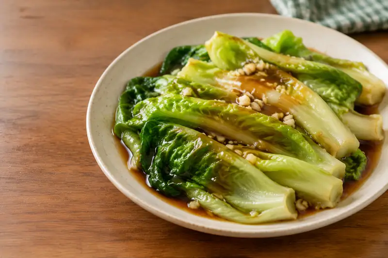
Lettuce with Oyster Sauce蚝油生菜10 min分钟 · 2 servings份 · Cantonese粤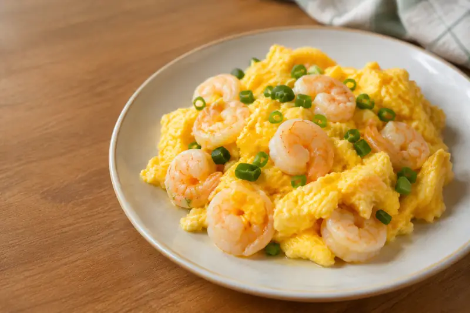
Cantonese Shrimp and Silky Eggs滑蛋虾仁21 min分钟 · 2 servings份 · Cantonese粤 Shrimp Wonton Soup鲜虾云吞汤40 min分钟 · 4 servings份 · Cantonese粤Soy Sauce Chicken豉油鸡57 min分钟 · 4 servings份 · Cantonese粤
Shrimp Wonton Soup鲜虾云吞汤40 min分钟 · 4 servings份 · Cantonese粤Soy Sauce Chicken豉油鸡57 min分钟 · 4 servings份 · Cantonese粤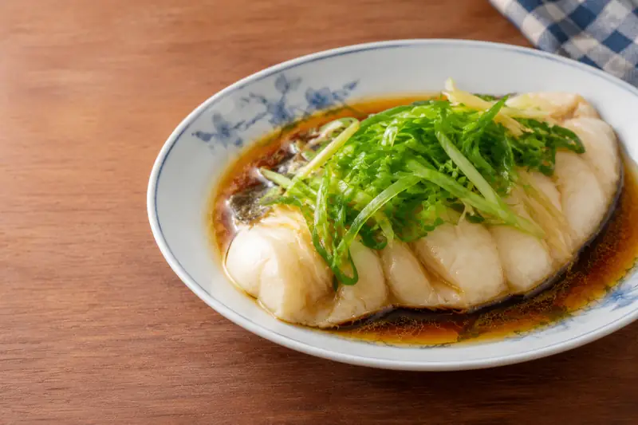
Cantonese-Style Steamed Cod清蒸鳕鱼22 min分钟 · 2 servings份 · Cantonese粤Steamed Egg with Shrimp虾仁蒸水蛋27 min分钟 · 2 servings份 · Cantonese粤Silky Steamed Eggs with Minced Pork肉末蒸水蛋25 min分钟 · 2 servings份 · Cantonese粤 Steamed Pork Ribs in Black Bean Sauce豉汁蒸排骨60 min分钟 · 4 servings份 · Cantonese粤Tofu Skin Rolls腐皮卷45 min分钟 · 2 servings份 · Cantonese粤Tomato Beef Brisket Soup西红柿牛腩汤140 min分钟 · 4 servings份 · Chinese home-style家常Watercress Soup西洋菜汤110 min分钟 · 4 servings份 · Cantonese粤Sand Ginger Chicken沙姜鸡80 min分钟 · 4 servings份 · Cantonese粤Winter Melon and Shrimp Soup冬瓜虾仁汤40 min分钟 · 4 servings份 · Chinese home-style家常
Steamed Pork Ribs in Black Bean Sauce豉汁蒸排骨60 min分钟 · 4 servings份 · Cantonese粤Tofu Skin Rolls腐皮卷45 min分钟 · 2 servings份 · Cantonese粤Tomato Beef Brisket Soup西红柿牛腩汤140 min分钟 · 4 servings份 · Chinese home-style家常Watercress Soup西洋菜汤110 min分钟 · 4 servings份 · Cantonese粤Sand Ginger Chicken沙姜鸡80 min分钟 · 4 servings份 · Cantonese粤Winter Melon and Shrimp Soup冬瓜虾仁汤40 min分钟 · 4 servings份 · Chinese home-style家常 West Lake Beef Soup西湖牛肉羹25 min分钟 · 4 servings份 · Jiangnan江浙
West Lake Beef Soup西湖牛肉羹25 min分钟 · 4 servings份 · Jiangnan江浙Hunan湘 7
Steamed Fish with Chopped Chili剁椒蒸鱼22 min分钟 · 2 servings份 · Hunan湘Hunan Chili and Egg Stir-fry尖椒炒蛋14 min分钟 · 2 servings份 · Hunan湘Hunan Farmhouse Stir-fried Pork农家小炒肉25 min分钟 · 2 servings份 · Hunan湘Hand-torn Eggplant手撕茄子22 min分钟 · 2 servings份 · Hunan湘Hand-Torn Cabbage Stir-fry手撕包菜18 min分钟 · 2 servings份 · Hunan湘Hunan Stir-fried Beef小炒黄牛肉20 min分钟 · 2 servings份 · Hunan湘 Hunan Stir-fried Pork with Green Chillies农家小炒肉18 min分钟 · 2 servings份 · Hunan湘
Hunan Stir-fried Pork with Green Chillies农家小炒肉18 min分钟 · 2 servings份 · Hunan湘
Hunan Stir-fried Pork with Green Chillies农家小炒肉18 min分钟 · 2 servings份 · Hunan湘Jiangnan江浙 14
Dongpo Braised Pork东坡肉140 min分钟 · 4 servings份 · Jiangnan江浙Shaoxing Drunken Chicken醉鸡515 min分钟 · 4 servings份 · Jiangnan江浙Lion's Head Meatballs清炖狮子头85 min分钟 · 4 servings份 · Jiangnan江浙Longjing Tea Shrimp龙井虾仁35 min分钟 · 2 servings份 · Jiangnan江浙Bok Choy with Shiitake Mushrooms香菇扒油菜21 min分钟 · 3 servings份 · Jiangnan江浙Scallion Oil Noodles葱油拌面26 min分钟 · 2 servings份 · Jiangnan江浙Shanghai Vegetable Rice (Caifan)上海菜饭60 min分钟 · 3 servings份 · Jiangnan江浙Shanghai Fried Noodles上海粗炒面27 min分钟 · 2 servings份 · Jiangnan江浙Pan-Fried Pork Buns生煎包135 min分钟 · 4 servings份 · Jiangnan江浙West Lake Beef Soup西湖牛肉羹25 min分钟 · 4 servings份 · Jiangnan江浙 Yangzhou Fried Rice扬州炒饭20 min分钟 · 3 servings份 · Jiangnan江浙Shanghai Crispy Shrimp油爆虾37 min分钟 · 2 servings份 · Jiangnan江浙
Yangzhou Fried Rice扬州炒饭20 min分钟 · 3 servings份 · Jiangnan江浙Shanghai Crispy Shrimp油爆虾37 min分钟 · 2 servings份 · Jiangnan江浙
Bok Choy with Shiitake Mushrooms香菇扒油菜21 min分钟 · 3 servings份 · Jiangnan江浙Scallion Oil Noodles葱油拌面26 min分钟 · 2 servings份 · Jiangnan江浙Shanghai Vegetable Rice (Caifan)上海菜饭60 min分钟 · 3 servings份 · Jiangnan江浙Shanghai Fried Noodles上海粗炒面27 min分钟 · 2 servings份 · Jiangnan江浙Pan-Fried Pork Buns生煎包135 min分钟 · 4 servings份 · Jiangnan江浙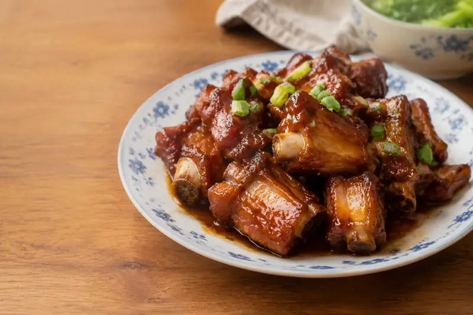
Shanghai Sweet and Sour Spare Ribs上海糖醋小排60 min分钟 · 3 servings份 · Jiangnan江浙West Lake Vinegar Fish西湖醋鱼（家常版）27 min分钟 · 2 servings份 · Jiangnan江浙West Lake Beef Soup西湖牛肉羹25 min分钟 · 4 servings份 · Jiangnan江浙Yangzhou Fried Rice扬州炒饭20 min分钟 · 3 servings份 · Jiangnan江浙Shanghai Crispy Shrimp油爆虾37 min分钟 · 2 servings份 · Jiangnan江浙Western西式 20
 Beef Chili美式牛肉辣豆汤（Chili）75 min分钟 · 6 servings份 · Western西式Irish Beef Stew爱尔兰炖牛肉210 min分钟 · 6 servings份 · Western西式
Beef Chili美式牛肉辣豆汤（Chili）75 min分钟 · 6 servings份 · Western西式Irish Beef Stew爱尔兰炖牛肉210 min分钟 · 6 servings份 · Western西式 Chicken Caesar Salad with Homemade Dressing and Croutons凯撒沙拉配烤鸡（自制酱汁和面包丁）45 min分钟 · 2 servings份 · Western西式
Chicken Caesar Salad with Homemade Dressing and Croutons凯撒沙拉配烤鸡（自制酱汁和面包丁）45 min分钟 · 2 servings份 · Western西式 Chicken Noodle Soup美式鸡肉蔬菜面汤50 min分钟 · 6 servings份 · Western西式New England Clam Chowder新英格兰蛤蜊汤60 min分钟 · 4 servings份 · Western西式Fish Tacos炸鱼塔可40 min分钟 · 4 servings份 · Western西式
Chicken Noodle Soup美式鸡肉蔬菜面汤50 min分钟 · 6 servings份 · Western西式New England Clam Chowder新英格兰蛤蜊汤60 min分钟 · 4 servings份 · Western西式Fish Tacos炸鱼塔可40 min分钟 · 4 servings份 · Western西式 Lemon Butter Baked Cod柠檬黄油烤鳕鱼22 min分钟 · 2 servings份 · Western西式Baked Mac and Cheese烤芝士通心粉65 min分钟 · 4 servings份 · Western西式
Lemon Butter Baked Cod柠檬黄油烤鳕鱼22 min分钟 · 2 servings份 · Western西式Baked Mac and Cheese烤芝士通心粉65 min分钟 · 4 servings份 · Western西式 Pan-Seared Butter-Basted Steak平底锅牛排（黄油淋煎）67 min分钟 · 2 servings份 · Western西式Buttermilk Pancakes美式松饼30 min分钟 · 4 servings份 · Western西式
Pan-Seared Butter-Basted Steak平底锅牛排（黄油淋煎）67 min分钟 · 2 servings份 · Western西式Buttermilk Pancakes美式松饼30 min分钟 · 4 servings份 · Western西式 Roast Chicken with Root Vegetables烤全鸡（西式，配根茎蔬菜）170 min分钟 · 4 servings份 · Western西式
Roast Chicken with Root Vegetables烤全鸡（西式，配根茎蔬菜）170 min分钟 · 4 servings份 · Western西式 Garlic Roasted Asparagus蒜香烤芦笋17 min分钟 · 3 servings份 · Western西式
Garlic Roasted Asparagus蒜香烤芦笋17 min分钟 · 3 servings份 · Western西式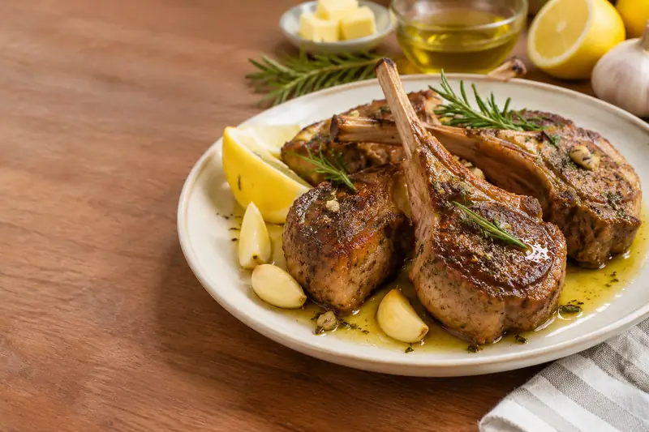
Rosemary Garlic Lamb Chops迷迭香煎羊排37 min分钟 · 2 servings份 · Western西式 Salmon Chowder三文鱼土豆浓汤45 min分钟 · 6 servings份 · Western西式Sheet-Pan Salmon with Potatoes and Broccoli三文鱼烤盘餐50 min分钟 · 4 servings份 · Western西式
Salmon Chowder三文鱼土豆浓汤45 min分钟 · 6 servings份 · Western西式Sheet-Pan Salmon with Potatoes and Broccoli三文鱼烤盘餐50 min分钟 · 4 servings份 · Western西式 Shakshuka番茄烩蛋（Shakshuka）35 min分钟 · 3 servings份 · Greek / Mediterranean希腊/地中海Sheet-Pan Sausage and Vegetables香肠烤蔬菜60 min分钟 · 4 servings份 · Western西式Shepherd's Pie牧羊人派105 min分钟 · 6 servings份 · Western西式
Shakshuka番茄烩蛋（Shakshuka）35 min分钟 · 3 servings份 · Greek / Mediterranean希腊/地中海Sheet-Pan Sausage and Vegetables香肠烤蔬菜60 min分钟 · 4 servings份 · Western西式Shepherd's Pie牧羊人派105 min分钟 · 6 servings份 · Western西式 Shrimp Scampi Pasta蒜香黄油虾意面25 min分钟 · 3 servings份 · Italian意Roast Turkey烤火鸡240 min分钟 · 8 servings份 · Western西式
Shrimp Scampi Pasta蒜香黄油虾意面25 min分钟 · 3 servings份 · Italian意Roast Turkey烤火鸡240 min分钟 · 8 servings份 · Western西式Japanese日 12
Chawanmushi茶碗蒸32 min分钟 · 2 servings份 · Japanese日Teriyaki Chicken Bento照烧鸡腿便当37 min分钟 · 2 servings份 · Japanese日 Japanese Beef Bowl (Gyudon)日式牛丼25 min分钟 · 3 servings份 · Japanese日
Japanese Beef Bowl (Gyudon)日式牛丼25 min分钟 · 3 servings份 · Japanese日 Japanese Chicken Curry日式咖喱鸡90 min分钟 · 4 servings份 · Japanese日Karaage Fried Chicken日式炸鸡53 min分钟 · 2 servings份 · Japanese日
Japanese Chicken Curry日式咖喱鸡90 min分钟 · 4 servings份 · Japanese日Karaage Fried Chicken日式炸鸡53 min分钟 · 2 servings份 · Japanese日 Tofu Miso Soup豆腐味噌汤15 min分钟 · 4 servings份 · Japanese日Nikujaga土豆炖肉55 min分钟 · 3 servings份 · Japanese日
Tofu Miso Soup豆腐味噌汤15 min分钟 · 4 servings份 · Japanese日Nikujaga土豆炖肉55 min分钟 · 3 servings份 · Japanese日 Oyakodon (Japanese Chicken and Egg Rice Bowl)亲子丼（日式鸡肉滑蛋盖饭）50 min分钟 · 2 servings份 · Japanese日Salmon Onigiri三文鱼饭团40 min分钟 · 2 servings份 · Japanese日
Oyakodon (Japanese Chicken and Egg Rice Bowl)亲子丼（日式鸡肉滑蛋盖饭）50 min分钟 · 2 servings份 · Japanese日Salmon Onigiri三文鱼饭团40 min分钟 · 2 servings份 · Japanese日 Teriyaki Salmon照烧三文鱼22 min分钟 · 2 servings份 · Japanese日Tonkatsu日式炸猪排50 min分钟 · 4 servings份 · Japanese日
Teriyaki Salmon照烧三文鱼22 min分钟 · 2 servings份 · Japanese日Tonkatsu日式炸猪排50 min分钟 · 4 servings份 · Japanese日
Japanese Beef Bowl (Gyudon)日式牛丼25 min分钟 · 3 servings份 · Japanese日Japanese Chicken Curry日式咖喱鸡90 min分钟 · 4 servings份 · Japanese日Karaage Fried Chicken日式炸鸡53 min分钟 · 2 servings份 · Japanese日Tofu Miso Soup豆腐味噌汤15 min分钟 · 4 servings份 · Japanese日Nikujaga土豆炖肉55 min分钟 · 3 servings份 · Japanese日Oyakodon (Japanese Chicken and Egg Rice Bowl)亲子丼（日式鸡肉滑蛋盖饭）50 min分钟 · 2 servings份 · Japanese日Salmon Onigiri三文鱼饭团40 min分钟 · 2 servings份 · Japanese日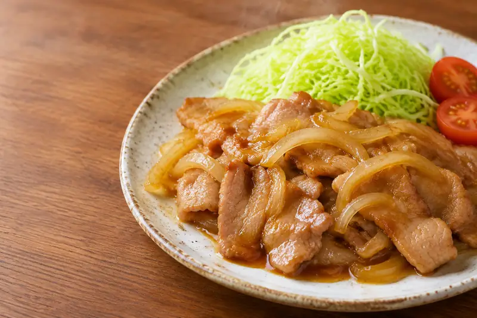
Japanese Ginger Pork (Shogayaki)日式生姜烧猪肉18 min分钟 · 2 servings份 · Japanese日Teriyaki Salmon照烧三文鱼22 min分钟 · 2 servings份 · Japanese日Tonkatsu日式炸猪排50 min分钟 · 4 servings份 · Japanese日Korean韩 14
Bibimbap石锅拌饭50 min分钟 · 2 servings份 · Korean韩 Bulgogi (Korean Marinated Beef)韩式烤牛肉 bulgogi（自制腌料）80 min分钟 · 4 servings份 · Korean韩Dakgalbi春川辣炒鸡45 min分钟 · 4 servings份 · Korean韩
Bulgogi (Korean Marinated Beef)韩式烤牛肉 bulgogi（自制腌料）80 min分钟 · 4 servings份 · Korean韩Dakgalbi春川辣炒鸡45 min分钟 · 4 servings份 · Korean韩 Korean Braised Tofu (Dubu Jorim)韩式酱烧豆腐20 min分钟 · 3 servings份 · Korean韩
Korean Braised Tofu (Dubu Jorim)韩式酱烧豆腐20 min分钟 · 3 servings份 · Korean韩 Kimchi and Tofu Stew (Kimchi-jjigae)泡菜豆腐汤（kimchi-jjigae）45 min分钟 · 2 servings份 · Korean韩Korean Fried Chicken韩式炸鸡55 min分钟 · 3 servings份 · Korean韩
Kimchi and Tofu Stew (Kimchi-jjigae)泡菜豆腐汤（kimchi-jjigae）45 min分钟 · 2 servings份 · Korean韩Korean Fried Chicken韩式炸鸡55 min分钟 · 3 servings份 · Korean韩 Korean Seasoned Spinach (Sigeumchi Namul)韩式凉拌菠菜8 min分钟 · 3 servings份 · Korean韩Seafood Soft Tofu Stew海鲜嫩豆腐汤35 min分钟 · 3 servings份 · Korean韩Tteokbokki辣炒年糕30 min分钟 · 2 servings份 · Korean韩
Korean Seasoned Spinach (Sigeumchi Namul)韩式凉拌菠菜8 min分钟 · 3 servings份 · Korean韩Seafood Soft Tofu Stew海鲜嫩豆腐汤35 min分钟 · 3 servings份 · Korean韩Tteokbokki辣炒年糕30 min分钟 · 2 servings份 · Korean韩
Bulgogi (Korean Marinated Beef)韩式烤牛肉 bulgogi（自制腌料）80 min分钟 · 4 servings份 · Korean韩Dakgalbi春川辣炒鸡45 min分钟 · 4 servings份 · Korean韩Korean Braised Tofu (Dubu Jorim)韩式酱烧豆腐20 min分钟 · 3 servings份 · Korean韩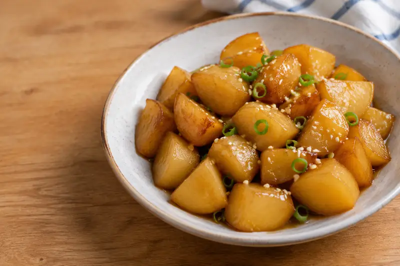
Korean Soy-braised Potatoes (Gamja Jorim)韩式酱烧土豆30 min分钟 · 3 servings份 · Korean韩Korean Steamed Egg韩式蒸蛋23 min分钟 · 2 servings份 · Korean韩Japchae韩式杂菜45 min分钟 · 2 servings份 · Korean韩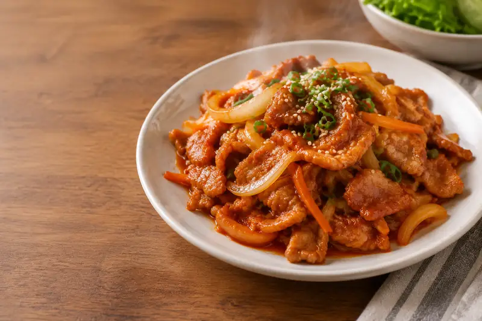
Korean Spicy Stir-fried Pork (Jeyuk Bokkeum)韩式辣炒猪肉25 min分钟 · 3 servings份 · Korean韩Kimchi Fried Rice泡菜炒饭20 min分钟 · 2 servings份 · Korean韩Kimchi and Tofu Stew (Kimchi-jjigae)泡菜豆腐汤（kimchi-jjigae）45 min分钟 · 2 servings份 · Korean韩Korean Fried Chicken韩式炸鸡55 min分钟 · 3 servings份 · Korean韩Korean Seasoned Spinach (Sigeumchi Namul)韩式凉拌菠菜8 min分钟 · 3 servings份 · Korean韩Seafood Soft Tofu Stew海鲜嫩豆腐汤35 min分钟 · 3 servings份 · Korean韩Tteokbokki辣炒年糕30 min分钟 · 2 servings份 · Korean韩Greek / Mediterranean希腊/地中海 6
 Greek Chicken Souvlaki with Tzatziki希腊柠檬烤鸡串配酸奶黄瓜酱65 min分钟 · 4 servings份 · Greek / Mediterranean希腊/地中海
Greek Chicken Souvlaki with Tzatziki希腊柠檬烤鸡串配酸奶黄瓜酱65 min分钟 · 4 servings份 · Greek / Mediterranean希腊/地中海 Greek Roast Leg of Lamb with Lemon Potatoes希腊烤羊腿185 min分钟 · 6 servings份 · Greek / Mediterranean希腊/地中海Greek Salad希腊沙拉20 min分钟 · 4 servings份 · Greek / Mediterranean希腊/地中海Lemon Chicken Orzo柠檬鸡肉米粒面45 min分钟 · 4 servings份 · Greek / Mediterranean希腊/地中海Moussaka希腊茄子肉酱千层145 min分钟 · 6 servings份 · Greek / Mediterranean希腊/地中海Shakshuka番茄烩蛋（Shakshuka）35 min分钟 · 3 servings份 · Greek / Mediterranean希腊/地中海
Greek Roast Leg of Lamb with Lemon Potatoes希腊烤羊腿185 min分钟 · 6 servings份 · Greek / Mediterranean希腊/地中海Greek Salad希腊沙拉20 min分钟 · 4 servings份 · Greek / Mediterranean希腊/地中海Lemon Chicken Orzo柠檬鸡肉米粒面45 min分钟 · 4 servings份 · Greek / Mediterranean希腊/地中海Moussaka希腊茄子肉酱千层145 min分钟 · 6 servings份 · Greek / Mediterranean希腊/地中海Shakshuka番茄烩蛋（Shakshuka）35 min分钟 · 3 servings份 · Greek / Mediterranean希腊/地中海Italian意 7
Spaghetti Carbonara培根蛋酱意面25 min分钟 · 4 servings份 · Italian意Chicken Parmesan意式帕玛森鸡排45 min分钟 · 4 servings份 · Italian意Classic Lasagna千层面120 min分钟 · 6 servings份 · Italian意 Minestrone意式蔬菜汤（Minestrone）55 min分钟 · 6 servings份 · Italian意Mushroom Risotto蘑菇烩饭45 min分钟 · 4 servings份 · Italian意Shrimp Scampi Pasta蒜香黄油虾意面25 min分钟 · 3 servings份 · Italian意
Minestrone意式蔬菜汤（Minestrone）55 min分钟 · 6 servings份 · Italian意Mushroom Risotto蘑菇烩饭45 min分钟 · 4 servings份 · Italian意Shrimp Scampi Pasta蒜香黄油虾意面25 min分钟 · 3 servings份 · Italian意 Spaghetti with Bolognese Ragu意式番茄肉酱面（博洛尼亚肉酱）175 min分钟 · 4 servings份 · Italian意
Spaghetti with Bolognese Ragu意式番茄肉酱面（博洛尼亚肉酱）175 min分钟 · 4 servings份 · Italian意
Minestrone意式蔬菜汤（Minestrone）55 min分钟 · 6 servings份 · Italian意Mushroom Risotto蘑菇烩饭45 min分钟 · 4 servings份 · Italian意Shrimp Scampi Pasta蒜香黄油虾意面25 min分钟 · 3 servings份 · Italian意Spaghetti with Bolognese Ragu意式番茄肉酱面（博洛尼亚肉酱）175 min分钟 · 4 servings份 · Italian意French法 5

Fujian / Taiwanese闽台 4
Northwestern / Xinjiang西北/新疆 7
Shaanxi Oil-Splashed Noodles油泼面90 min分钟 · 2 servings份 · Northwestern / Xinjiang西北/新疆Cumin Beef孜然牛肉25 min分钟 · 2 servings份 · Northwestern / Xinjiang西北/新疆Xinjiang Big Plate Chicken大盘鸡90 min分钟 · 4 servings份 · Northwestern / Xinjiang西北/新疆Xinjiang Lamb Pilaf新疆手抓饭140 min分钟 · 4 servings份 · Northwestern / Xinjiang西北/新疆Lamb Soup with Bread羊肉泡馍（家常版）115 min分钟 · 3 servings份 · Northwestern / Xinjiang西北/新疆Liangpi Cold Noodles凉皮170 min分钟 · 2 servings份 · Northwestern / Xinjiang西北/新疆Roujiamo Chinese Burger肉夹馍140 min分钟 · 4 servings份 · Northwestern / Xinjiang西北/新疆